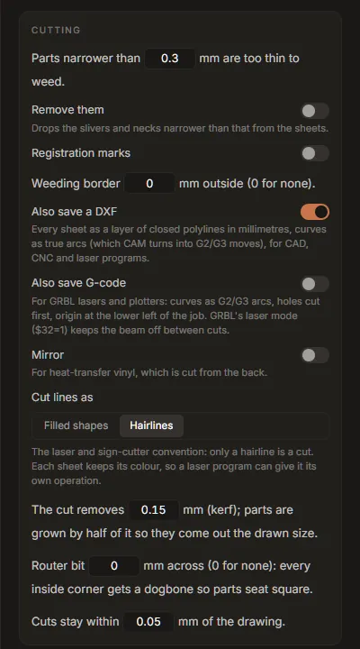

Tutorial: laser cutting, DXF and G-code
This tutorial turns a logo into files for a laser cutter or a CNC router: hairline cut paths in real millimetres, compensated for the width of the cut, as an SVG for LightBurn, a DXF for CAD and CAM programs, and G-code for a GRBL machine. About 15 minutes, plus a test cut.
1. Trace it, or bring an SVG
Trace the logo in Vectorize as usual (see Getting started), then open Fabricate and press Use the current trace. Or open any SVG in Fabricate with Open an SVG.
For cutting, fewer and simpler outlines are better: every outline is a path the head has to follow. Accept the palette's colour-group suggestions, and consider the Fewer paths preset before you bring the trace over.
2. Choose "Laser or sign cutter"
Under Material, press Laser or sign cutter. It sets:
- Inlay mode: one sheet per colour, cut exactly, nothing stacked;
- Hairlines: only a hairline is a cut, and each sheet keeps its colour so a laser program can give each colour its own operation (LightBurn reads the colours as layers);
- a kerf of 0.15 mm, inner shapes cut before the parts around them;
- a smallest width of 0.3 mm, no registration marks;
- Also save a DXF on.

To cut one outline from one sheet of material rather than one sheet per colour, choose One colour under Making: every selected colour is joined into a single cut.
To engrave lines rather than cut shapes (a pen, a scoring tool, or a laser line along the middle of each stroke), choose Pen or score instead: each line is followed once, down its centre.
3. Set the size, and the units the file states
Type the finished width under Size. Then set The files state their size in:
- Pixels, 96/in for LightBurn, Inkscape, Carbide Create and Fusion, which read a bare pixel size at 96 per inch;
- Millimetres for everything else.
The DXF and the G-code are always in millimetres, whatever this says.
Turn on Cut a size-check square for the first cut: a 20 mm square below the design, to measure.
4. Measure and set the kerf
The beam (or the bit) removes a strip of material as wide as the kerf. Without compensation every part comes out smaller than drawn by that much, and every hole larger. With Hairlines, the tab grows each part by half the kerf, so it comes out at the drawn size.
Typical kerfs: a CO₂ laser 0.1 to 0.2 mm, a diode laser 0.15 to 0.3 mm. Yours depends on the machine, the lens, the focus and the material, so measure it:
- Cut the size-check square with the kerf set to 0.
- Measure the square with calipers. The kerf is
20 mm − measured size. - Type it into The cut removes x mm (kerf).
5. For a router: dogbones and the bit
A round router bit cannot cut a sharp inside corner, so parts meant to fit into each other will not seat. Type the bit's diameter into Router bit x mm across: every inside corner gets a dogbone, a small round relief, so parts seat square. If some holes or gaps are narrower than the bit, Before you cut says so: the bit cannot get into them.
Leave it at 0 for a laser.
6. Check before you cut
Before you cut lists the job (sheets, pieces, path segments, overall size) and anything that will cause trouble: parts narrower than the smallest width, more than 2,000 path segments (slow in most programs; raise Cuts stay within x mm to lower it), gaps the bit cannot enter. Show problems draws them on the stage.
7. G-code for a GRBL machine
For a diode laser or a pen plotter running GRBL, turn on Also save G-code and set the sentence under it: Cut at 1000 mm/min, power S 1000, 1 pass.
- Speed and power depend entirely on your machine and material. Start from the material's
recommended settings, and test on scrap.
Sis in GRBL's power units;S1000is full power with GRBL's default$30=1000. - Passes: thick material needs several passes at a speed that cuts cleanly.
- The file uses laser mode. Set
$32=1on the controller once, so the beam is off during moves between cuts; under laser mode, power follows speed (M4), so corners do not burn. - Origin: the lower left of the job, marks and borders included, in millimetres. Jog the head to the lower-left corner of the material and zero it there before running the file.
- Curves are written as arcs (
G2/G3), and holes and inner parts are cut before the part around them, so a part never shifts before its holes are cut.
Always run the file first with the laser at low power (or off, with a pointer), to check the position and the size.
8. Save
Press Save N sheets… and choose a folder. You get one SVG per colour, name-all.svg with
every colour as its own group, name.dxf and, if on, name.gcode.
- LightBurn: import
name-all.svg(or the DXF). Each colour arrives as its own layer; set a cut operation per layer. - CAD and CAM programs (Fusion, FreeCAD, VCarve, Carbide Create): import
name.dxf. It is R12 DXF, the version every program reads, one layer per colour, closed polylines in millimetres, curves as true arcs, which CAM turns intoG2/G3moves. - GRBL: send
name.gcodewith your usual sender.
Studio Lite: Save downloads the files.
Engraving lines with "Pen or score"
Pen or score sets the Lines mode: every line in the drawing is followed once, along its centre, rather than around both of its edges. The Drawing card sets the tip width (the preview shows the line the tool will leave) and which lines count as lines: Lines up to x mm wide are drawn once (0 for any width); wider parts are drawn round their outline. The DXF has lines as open polylines and outlines as closed ones. G-code works as above.